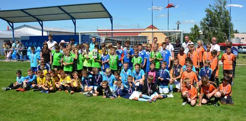

Slavoj Cup 2018
Turnaj prípraviek v Boleráze

V rámci osláv 90.výročia založenia klubu prípravka odohrala už 4.ročník Slavoj cupu - turnaja prípraviek v Boleráze. Turnaja sa zúčastnilo 6 mužstiev. My sme zložili dve, ďalej prijali pozvanie Bučany, Dobrá Voda, Smolenice a Trakovice. Na konci turnaja sme sa nakoniec tešili my, keď sme ako jediný prešli turnajom bez prehry.
Výsledky
Boleráz "A" - Dobrá Voda 1:1 (1:1)
góly: Michal Turoň - Samuel Vaško
Trakovice - Bučany 1:1 (1:0)
góly: Adam Bošácky - Marek Jobek
Boleráz "A" - Smolenice 2:1 (2:0)
góly: Michal Turoň-2 - Timotej Haberl
Trakovice - Boleráz "B" 2:0 (0:0)
góly: Adam Bošácky-2
Dobrá Voda - Smolenice 2:0 (1:0)
góly: Marek Drobný-2
Bučany - Boleráz"B" 6:0 (5:0)
góly: Dominik Vavro-2, Matej Cepka, Radovan Belokostolský, Šimon Kubovič, Dávid Lopašovský
Dobrá Voda - Trakovice 2:1 (1:0)
góly: vlastný, Marek Drobný - Adam Bošácky
Boleráz"A" - Bučany 2:0 (0:0)
góly: Michal Turoň, Alex Antošík
Smolenice - Boleráz "B" 5:0 (1:0)
góly: Timotej Haberl-3, Daniel Janurík-2
Bučany - Dobrá Voda 2:1 (1:0)
góly: Matej Cepka, Erik Valko - Richard Hlavatovič
Boleráz "A" - Trakovice 2:0 (1:0)
góly: Teodor Urban, Jakub Palšovič
Boleráz "B" - Dobrá Voda 0:7 (0:3)
góly: Marek Drobný-2, David Puškáš, Petra Danková, Richard Hlavatovič, Nikolas Junas, Jakub Novák
Smolenice - Bučany 0:0
Boleráz "A" - Boleráz "B" 7:0 (3:0)
góly: Alex Antošík-3, Jakub Palšovič, Teodor Urban, Matúš Buchan-2
Trakovice - Smolenice 0:2 (0:1)
góly: Timotej Haberl-2
Tabuľka
| Tím | Z | V | R | P | Skóre | B | |
|---|---|---|---|---|---|---|---|
| 1. | Boleráz "A" | 5 | 4 | 1 | 0 | 14:2 | 13 |
| 2. | Dobrá Voda | 5 | 3 | 1 | 1 | 13:4 | 10 |
| 3. | Bučany | 5 | 2 | 2 | 1 | 9:4 | 8 |
| 4. | Smolenice | 5 | 2 | 1 | 2 | 8:4 | 7 |
| 5. | Trakovice | 5 | 1 | 1 | 3 | 4:7 | 4 |
| 6. | Boleráz "B" | 5 | 0 | 0 | 5 | 0:27 | 0 |
Zoznam strelcov
6 gólov: Timotej Haberl (Smolenice)
5 gólov: Marek Drobný (Dobrá Voda)
4 góly: Michal Turoň (Boleráz), Alex Antošík (Boleráz), Adam Bošácky (Trakovice)
2 góly: Teodor Urban (Boleráz), Jakub Palšovič (Boleráz), Matúš Buchan (Boleráz), Dominik Vavro (Bučany), Matej Cepka (Bučany), Daniel Janurík (Smolenice), Richard Hlavatovič (Dobrá Voda)
1 gól: Samuel Vaško (Dobrá Voda), Dávid Puškáš (Dobrá Voda), Petra Danková (Dobrá Voda), Nikolas Junas (Dobrá Voda), Jakub Novák (Dobrá Voda), Marek Jobek (Bučany), Radovan Belokostolský (Bučany), Šimon Kubovič (Bučany), Dávid Lopašovský (Bučany), Erik Valko (Bučany)
Najlepší hráč: Adam Škubla (Trakovice)
Najlepší strelec: Timotej Haberl (Smolenice)
Najlepší brankár: Kristián Lančarič (Boleráz)
Zdroj: starý web klubu slavojboleraz.webnode.sk, prevzaté 16. 11. 2026 bez úprav údajov.